Cidadania e Profissionalidade · CP 4
Processos identitários
Quem sou eu, e quem sou com os outros?
CP 4 · programa
Programa
DR = Domínio de Referência para a Ação. Cada Núcleo Gerador do referencial é trabalhado em quatro contextos de vida, do privado ao global. Esses contextos chamam-se Domínios de Referência (DR) e geram os quatro temas específicos do programa. Clica em cada tema para o abrir.
1Contexto privadoDa identidade à alteridade
A identidade como o mesmo e o outro como mudança e diferença. Princípios de conduta (empatia, reação compassiva, solidariedade); princípios de igualdade e equidade (diversidade, aceitação e tolerância); manifestações de intolerância à diferença.
2Contexto profissionalDeontologia na construção da cultura organizacional
Ética enquanto pensamento da ação. Deontologia e ética centrada no dever. Pertença e lealdade no coletivo. Multiculturalidade no trabalho. Mecanismos de motivação e realização pessoal e profissional e a sua relação com a produtividade. Convergência entre objetivos organizacionais e motivações pessoais. Autonomia e responsabilidade no planeamento e estruturação de metas.
3Contexto institucionalPolíticas públicas de inclusão
Dispositivos e mecanismos de concertação social. Organismos institucionais de combate à discriminação (contexto nacional e internacional). A educação para a cidadania e a preservação da unidade na diversidade. Impacto económico, cultural e social dos fluxos migratórios no Portugal contemporâneo.
4Contexto macroestruturalUma nova identidade europeia em construção: o papel da multiculturalidade e da diversidade
Dimensão supranacional dos poderes do Estado. Conceito de Património Comum da Humanidade. Respeito e solidariedade entre identidades culturais distintas. Relações jurídicas a um nível macro: agentes de nível governamental e sociedade civil. Documentos estruturantes na construção europeia.
I.
Da identidade à alteridade
Antes de começar
As regras do nosso grupo
Ouvimos até ao fim, antes de responder.
Criticamos ideias, nunca pessoas.
O que é pessoal fica na sala, não se conta lá fora.
Ninguém é obrigado a expor a sua vida, pode sempre usar um caso fictício.
Que regra acrescentariam?
Para começar · podem usar ferramentas de inteligência artificial generativa
A história do meu nome
Quem escolheu o meu nome?
e porquê?
O que significa, ou de onde vem?
de uma pessoa da família, de uma língua, de uma tradição…
Gosto dele? Como prefiro ser tratado?
nome, apelido, alcunha.
O nome é a primeira marca de identidade: recebemo-lo dos outros antes de sabermos quem somos.
Cerca de um minuto por pessoa
Teoria
Nome comum e nome próprio
Nome comum
designa uma classe: serve para muitos
cão · cidade · rio · pessoa
Nome próprio
designa um só indivíduo
Tejo · Lisboa · Maria
O nome próprio não descreve: aponta. Chamar-se Clara não diz como ela é; diz quem ela é.
Teoria
A quem damos nome próprio?
Estatuto ontológico do nome. Ontologia: do grego on, ontos (o que é) + logos (estudo) = estudo do ser.
Coisas
quase nunca
exceções: navios, furacões, cidades
Animais
alguns
o cão da casa, sim; a galinha do aviário, não
Pessoas
sempre
a todas, por serem pessoas
Nomear = reconhecer
Ter um nome = ter um lugar no domínio da existência
Sem nome
Anonimato — também protege (o voto secreto)
Desumanização — um número em vez de um nome
Teoria
Definir é delimitar
«Toda a determinação é negação» (Espinosa, retomado por Hegel): uma coisa define-se pelo que não é.
Física
sistema + vizinhança = universo
Lógica
gato + não-gato = tudo
Consciência
Eu + Outro = universo
Teoria · Hegel
Sozinho, o «eu» não se encontra
1. Eu = Eu
«Eu sou eu»: certo, mas vazio. Uma tautologia parada.
2. O desejo
Satisfação só passageira: recomeça sempre.
Preciso de algo que não desapareça quando o «nego» e que me responda: outra consciência.
«A consciência de si só alcança a sua satisfação noutra consciência de si.» Hegel, §175
Teoria · Hegel
Reconhecer-me no outro
Uma coisa não me pode reconhecer. Só outra consciência pode.
1. Perco-me no outro
saio de mim: é nele que me vejo
2. Regresso a mim
e deixo o outro livre, como sujeito, não como coisa
«A consciência de si existe apenas enquanto é reconhecida.» Hegel, §178
Teoria · Hegel
Senhor e servo: o reconhecimento que falha
Cada um quer ser reconhecido sem reconhecer. Há uma luta; quem tem medo de morrer cede.
O senhor
é reconhecido por alguém que trata como coisa. O reconhecimento de uma «coisa» não vale nada, e fica dependente do trabalho do servo.
O servo
reconhece sem ser reconhecido. Mas, ao trabalhar, vê-se no que faz e começa a descobrir-se a si próprio.
Reconhecimento vertical, desigual: falha para os dois.
Teoria · Hegel
Só o reconhecimento mútuo funciona
Ninguém se torna sujeito sozinho; e tratar o outro como coisa é perder-me também.
Vertical
um só reconhece, o outro só é reconhecido: senhor e servo
Horizontal
reconheço-te como alguém que me reconhece: entre iguais
Nomear = reconhecer. Saber quem sou passa sempre pelo olhar do outro.
Uma palavra latina
Identidade: ser o mesmo, e ser diferente
O mesmo ao longo do tempo
o que continua igual em mim, apesar de tudo o que muda: sou a mesma pessoa que era em criança?
Diferente dos outros
o que me distingue de todas as outras pessoas, mas também o que partilho com alguns grupos.
Em que sou hoje igual ao que era há 20 anos? Em que mudei?
Jogo · 8 perguntas · 20 segundos cada
Jogo: O nome e o reconhecimento
Prontos?
8 perguntas · 20 segundos cada · respondam de braço no ar
Teclas 1 a 4 escolhem a resposta; Enter passa à seguinte.
Um nome próprio designa…
Tejo, Lisboa, Maria.
«O nome próprio não descreve…»
Chamar-se Clara não diz como ela é; diz quem ela é.
A quem damos sempre nome próprio?
A todas, por serem pessoas: é-lhes devido.
O que é a ontologia?
Do grego on, ontos (o que é) + logos (estudo).
Um número em vez de um nome pode ser sinal de…
O anonimato também pode proteger, como no voto secreto.
«Toda a determinação é negação» quer dizer que…
Espinosa, retomado por Hegel: gato + não-gato = tudo.
Para Hegel, a consciência de si só alcança a satisfação…
Hegel, § 175.
Na relação senhor e servo, o servo, ao trabalhar…
O senhor fica dependente do trabalho do servo.
Fim do jogo!
No telemóvel · cada um no seu
Joga no telemóvel e envia as respostas
Revisão · para estudar em casa
Nome comum ou nome próprio? E o que diz Hegel?
«Tejo»
Nome próprio: designa um só rio.
«cidade»
Nome comum: serve para muitas cidades.
Para Hegel, porque é que o desejo não chega para o «eu» se encontrar?
A satisfação é só passageira: recomeça sempre. Preciso de outra consciência.
Verdadeiro ou falso? Na relação senhor e servo, o reconhecimento funciona bem para os dois.
Falso. É um reconhecimento vertical, desigual: falha para os dois.
De que língua vem a palavra «idem», e o que quer dizer?
«Idem», em latim, quer dizer «o mesmo».
Experiência de pensamento
O navio de Teseu
identidade · identidade pessoal · Phineas Gage · o outro
Antes de começar
Uma história grega com 2000 anos. Para quê?
«Fale-me um pouco de si»
A primeira pergunta de quase todas as entrevistas de emprego. No fim da aula, vais saber responder-lhe em 1 minuto.
Mudar de vida sem te perderes
Mudar de emprego, de profissão, de país. O que muda em ti, e o que fica?
És substituível?
No trabalho, há coisas que qualquer pessoa faz no teu lugar. E há coisas que só tu fazes assim.
Tu também és um navio a que vão trocando as tábuas.
Primeiro, a história
O mito de Teseu
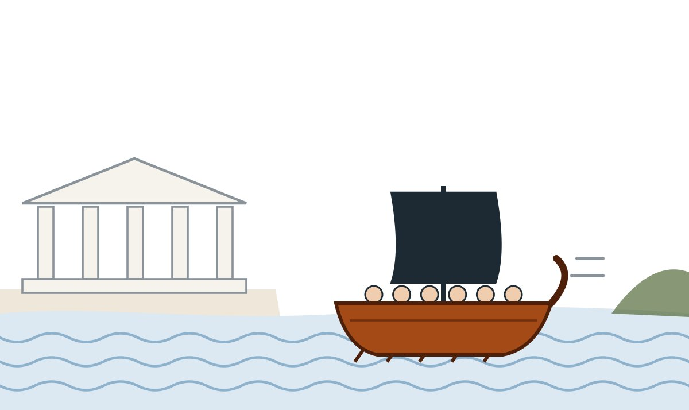
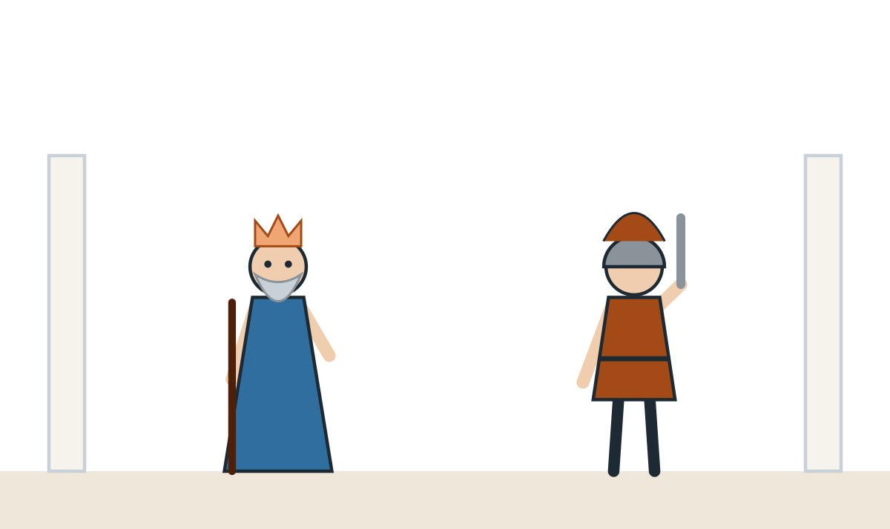
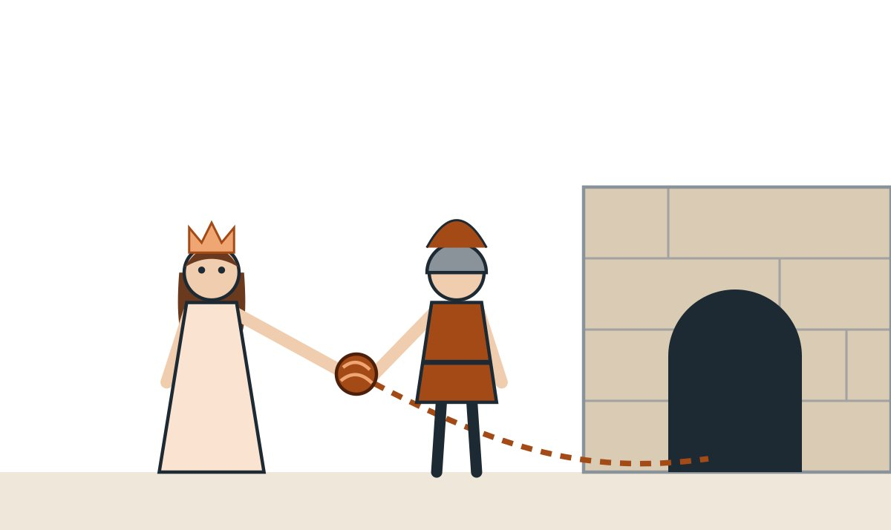
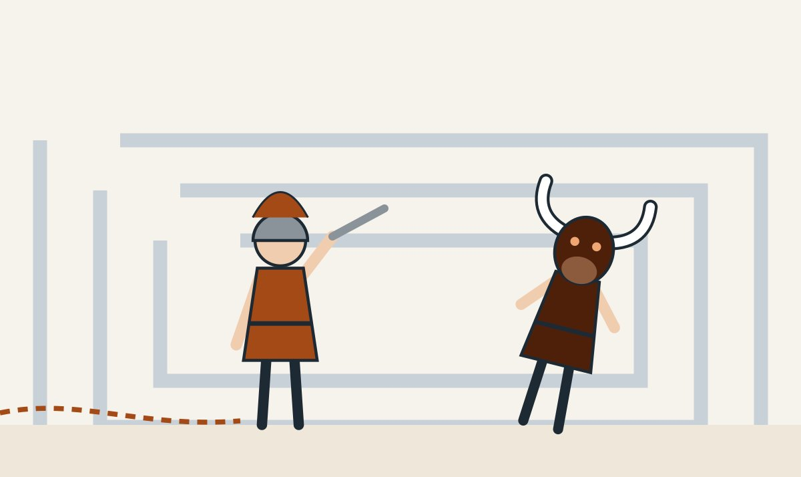
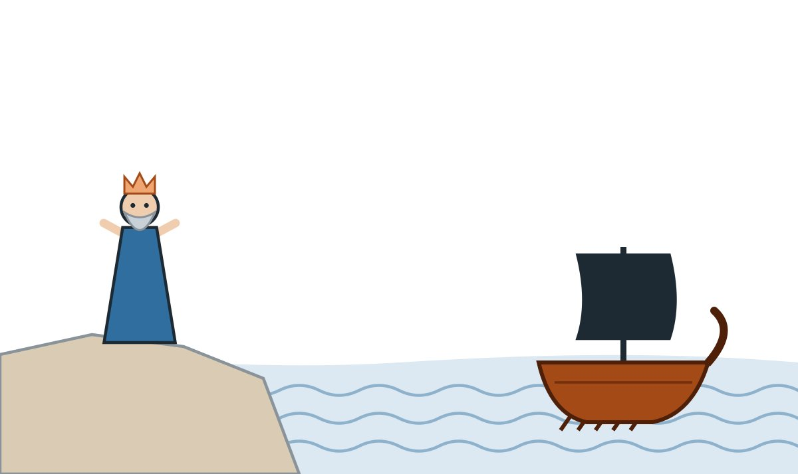
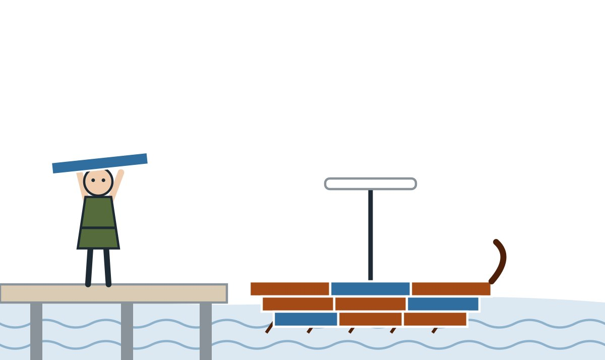
Plutarco, Vida de Teseu, 15–23. Há várias versões do mito; esta segue a mais conhecida.
Uma história com mais de 2000 anos
O navio de Teseu
Teseu, herói da mitologia grega, regressou a Atenas neste navio. Os atenienses guardaram-no durante séculos: sempre que uma tábua apodrecia, punham uma nova no lugar.
Tábuas originais
Quando já não resta nenhuma tábua original, ainda é o navio de Teseu?
Plutarco, Vida de Teseu, 23: já na Antiguidade os filósofos discutiam este exemplo.
Uma reviravolta
E se alguém guardasse as tábuas velhas?
Thomas Hobbes, filósofo inglês, imaginou o seguinte: um homem vai recolhendo cada tábua velha que é retirada e, no fim, monta com elas outro navio.
O navio restaurado
Ficou sempre no porto, com o mesmo nome e a mesma forma. Mas já não tem nenhuma tábua original.
O navio reconstruído
É feito com todas as tábuas originais. Mas foi montado mais tarde, noutro lugar.
Qual é o navio de Teseu?
Votação de braço no ar
Thomas Hobbes, De Corpore (1655), parte II, capítulo 11, § 7.
Exercício · navios de Teseu na vida real
O que mudou? O que ficou?
Na folha, faz duas colunas: Mudou e Ficou. Escolhe três casos e preenche. O último é obrigatório: tu.
O que quer dizer «idêntico»?
Igual ou o mesmo?
Identidade qualitativa
Iguais, mas são duas
Duas notas de 20 €: em tudo iguais, e qualquer uma serve no lugar da outra. A isto chama-se fungibilidade.
Identidade numérica
Uma só, com dois nomes
Não são duas pessoas parecidas: são a mesma pessoa, com dois nomes.
E o navio de Teseu: é o mesmo navio, ou só um navio igual?
Exercício · aplica ao teu trabalho
És uma tábua que qualquer outra substitui?
Fungível
Pode ser trocado por outro igual sem se notar a diferença: uma nota de 20 €, uma tábua, uma lâmpada.
No trabalho
Muitas empresas organizam-se como se as pessoas fossem tábuas: «sai um, entra outro». Mas há coisas que tornam uma pessoa difícil de substituir.
O que te torna menos fungível
✓ saber fazer algo que poucos sabem (e ter o certificado)
✓ clientes e colegas que confiam em ti
✓ cumprir sempre o que prometes
✓ conhecer bem a casa: como as coisas funcionam
Na tua folha
Pensa num trabalho que tens, tiveste ou queres ter. Faz duas colunas:
Qualquer pessoa faria igual | Só eu faço assim
Mínimo três linhas em cada coluna. Depois sublinha uma coisa da coluna da esquerda que podias passar para a direita.
O que é que sublinhaste? Como é que a passavas para o outro lado?
Leibniz e Heraclito · duas respostas extremas
Uma tábua chega para ser outro navio?
Leibniz: tudo igual, ou é outro
Se A e B são a mesma coisa, tudo o que é verdade de A é verdade de B. Trocaste uma tábua? À letra, já é outro navio.
Gottfried Leibniz (1646–1716), «indiscernibilidade dos idênticos».
Heraclito: tudo flui
«Ninguém entra duas vezes no mesmo rio»: nem o rio nem tu são os mesmos. Se tudo muda, ninguém é sempre o mesmo.
Fragmento citado por Platão, Crátilo, 402a.
A Ana foi cabeleireira 20 anos. Aos 45, tirou um curso e é agora técnica de informática. É a mesma pessoa?
Se nada pode mudar, a Ana não podia mudar de vida. Se tudo muda, não faz sentido ela pôr os 20 anos de experiência no CV.
Votação de braço no ar
O que não pode mudar?
Propriedades essenciais e acidentais
Essenciais: sem elas, a coisa deixa de ser o que é.
Acidentais: podem mudar sem que a coisa deixe de ser ela própria.
E no ser humano?
Para os existencialistas, como Jean-Paul Sartre, um objeto fabricado (um corta-papel, um navio) é pensado antes de existir. Com o ser humano é ao contrário: «a existência precede a essência». Primeiro existimos; depois, pelas escolhas, vamo-nos fazendo.
O que é que, em ti, nunca poderia mudar sem deixares de ser tu?
Jean-Paul Sartre, O Existencialismo é um Humanismo (1946).
Joga · essencial ou acidental?
Sem isto, ainda é a mesma coisa?
Essencial: sem isso, deixa de ser o que é. Acidental: pode mudar, e continua a ser o mesmo.
Para um motorista de pesados: ter carta de condução de categoria C.
Essencial: sem ela, não pode exercer a profissão.
Para um motorista de pesados: a cor da farda.
Acidental: a farda muda de empresa para empresa.
Para um enfermeiro: estar inscrito na Ordem dos Enfermeiros.
Essencial: sem inscrição, não pode exercer enfermagem em Portugal.
Num currículo: a fotografia.
Acidental: em Portugal não é obrigatória. Se puseres, que seja simples e profissional.
Num contrato de trabalho escrito: a assinatura das duas partes.
Essencial: sem assinaturas, o documento não vincula ninguém.
Para um cozinheiro: gostar de música rock.
Acidental: não muda em nada o que ele é como cozinheiro.
E em ti? Escreve na folha uma coisa essencial e uma acidental.
Teoria do corpo · continuo a ser eu porque permaneço no mesmo corpo. Será?
E tu, és um navio de Teseu?
Hoje
tábua original tábua nova acabou de ser trocada
Mudam as células. Dentro das que ficam, mudam os átomos. Então o que é que fica?
Modelo simplificado: cada ponto representa muitas células ou moléculas. Neurónios: Bhardwaj e colegas (2006). Água: Shimamoto e Komiya (2003). Proteínas do cérebro: Price e colegas (2010) e Savas e colegas (2012), em ratinhos e ratos.
Experiência de pensamento · Bernard Williams
O cientista louco
corpo A · o teu
1 milhão de euroso cientista troca o conteúdo mental
corpo B
torturaAntes da troca, és tu que escolhes: que corpo recebe o milhão e qual é torturado?
Para onde «vais» tu: com o teu corpo ou com a tua mente?
O milhão vai para…
Bernard Williams, «The Self and the Future», The Philosophical Review (1970).
John Locke · teoria da memória
Sou aquilo de que me lembro?
Para Locke, o que me faz ser eu é a consciência: sou a mesma pessoa que aquela criança porque me lembro de ter sido ela, ou de alguém que se lembrava.
Quatro problemas · clica em cada um
E quando a memória fica, mas o carácter muda?
John Locke, Ensaio sobre o Entendimento Humano (1690), livro II, capítulo 27.
Exercício · o teu navio de Teseu
Desenha o teu navio
Desenha um barco com três grupos de tábuas.
Em cada grupo escreve: que trabalho fazia/faço/quero, onde vivia, com quem, o que sabia fazer.
Por baixo, desenha a quilha: a peça do fundo que segura o barco todo.
Na quilha escreve uma ou duas coisas que nunca mudaram em ti: um valor, um jeito, um gosto.
A quilha é o teu fio condutor. Vamos precisar dela já a seguir.
Para a entrevista de emprego
«Fale-me um pouco de si»
De onde venho
Uma frase sobre o passado profissional.
«Trabalhei 12 anos no comércio, em atendimento.»
O que faço hoje
O que estou a fazer e o que sei fazer.
«Estou a terminar o 12.º ano à noite e tirei o curso de…»
O que procuro
Liga ao emprego a que te candidatas.
«Procuro um trabalho onde possa…»
A quilha
O fio que liga tudo: o que nunca mudou.
«Em tudo o que fiz, sempre gostei de resolver os problemas das pessoas.»
Sim
Cerca de 1 minuto · trabalho e competências · um exemplo concreto · terminar no emprego a que concorres
Não
A história da vida toda · estado civil, filhos, saúde, religião (não és obrigado a falar disso) · dizer mal do patrão antigo
Escreve a tua resposta usando o teu navio: tábuas = 1, 2, 3; quilha = 4.
Simulação · entrevista em pares
Um minuto para te apresentares
Um faz de entrevistador, o outro de candidato. O entrevistador escolhe o emprego.
O entrevistador diz: «Bom dia. Fale-me um pouco de si.»
O candidato responde, sem ler, em 1 minuto.
O entrevistador marca a grelha ao lado e dá uma dica. Depois trocam.
Grelha do entrevistador
☐ Disse de onde vem
☐ Disse o que faz e sabe fazer
☐ Ligou ao emprego
☐ Teve um fio condutor (a quilha)
☐ Coube em 1 minuto
☐ Olhou o entrevistador nos olhos
Que dica recebeste? Escreve-a no fundo da tua folha.
Pesquisa · 5 minutos
A Nokia trocou todas as tábuas
O que fabricava a Nokia quando foi fundada, em 1865? Que outros produtos fez antes de se dedicar às telecomunicações?
Pesquisa no telemóvel ou no computador. Depois, responde: mudou tudo. O que ficou?
Começou como fábrica de pasta de madeira para papel, fundada por Fredrik Idestam na Finlândia. Mais tarde fez botas e pneus de borracha e cabos, e até televisores. Nos anos 90 vendeu essas áreas e concentrou-se nas telecomunicações. Ficou o nome, que vem do rio e da vila de Nokia.
Fontes: Wikipédia, «Nokia» e «History of Nokia»; finland.fi, «Nokia’s tradition of adaptability».
Para levar para a vida
Para que serve isto?
Responder a «Fale-me de si»
Passado, presente, futuro, e a quilha que os liga. Treinaste hoje.
Mudar de profissão
As tábuas trocam-se. As competências transferíveis e a quilha vão contigo.
Ser menos fungível
Sabes o que só tu fazes assim. É isso que se põe no CV.
Bilhete de saída: numa frase, qual é a tua quilha?
Jogo · 8 perguntas · 20 segundos cada
Jogo: O navio de Teseu
Prontos?
8 perguntas · 20 segundos cada · respondam de braço no ar
Teclas 1 a 4 escolhem a resposta; Enter passa à seguinte.
O que imaginou Thomas Hobbes?
Qual é então o navio de Teseu: o restaurado ou o reconstruído?
Duas notas de 20 € são idênticas em que sentido?
Qualquer uma serve no lugar da outra: são fungíveis.
Ser pouco fungível no trabalho quer dizer…
Por saberes fazer algo raro, por confiarem em ti, por cumprires.
A Nokia começou por fabricar…
Em 1865, na Finlândia. Depois borracha e cabos.
Para um enfermeiro, estar inscrito na Ordem é uma propriedade…
Sem inscrição, não pode exercer.
Na resposta a «Fale-me de si», a quilha é…
É o que liga o passado, o presente e o futuro.
Quanto deve durar a resposta a «Fale-me de si»?
Curta, sobre trabalho e competências.
Para Locke, o que me faz ser a mesma pessoa?
Sou eu porque me lembro de ter sido aquela criança.
Fim do jogo!
No telemóvel · cada um no seu
Joga no telemóvel e envia as respostas
Revisão · para estudar em casa
Seis perguntas rápidas
Duas notas de 20 € são idênticas em que sentido?
São iguais em tudo, mas são duas: qualquer uma serve no lugar da outra (fungibilidade).
No navio, «a cor da vela» é uma propriedade…
Acidental: pode mudar sem que o navio deixe de ser ele próprio.
«Ninguém entra duas vezes no mesmo rio.» De quem é a ideia?
Heraclito: «tudo flui».
Que parte do corpo muda menos ao longo da vida?
A maior parte dos neurónios do córtex acompanha-nos desde que nascemos.
Para Locke, o que me faz ser a mesma pessoa?
Sou a mesma pessoa que aquela criança porque me lembro de ter sido ela.
Para os existencialistas, como Sartre, no ser humano…
Primeiro existimos; depois, pelas escolhas, vamo-nos fazendo.
Um caso real
Phineas Gage
o acidente · o cérebro · «já não era o Gage» · a lobotomia
Phineas Gage · Vermont, 1848
Uma barra de ferro atravessa um crânio
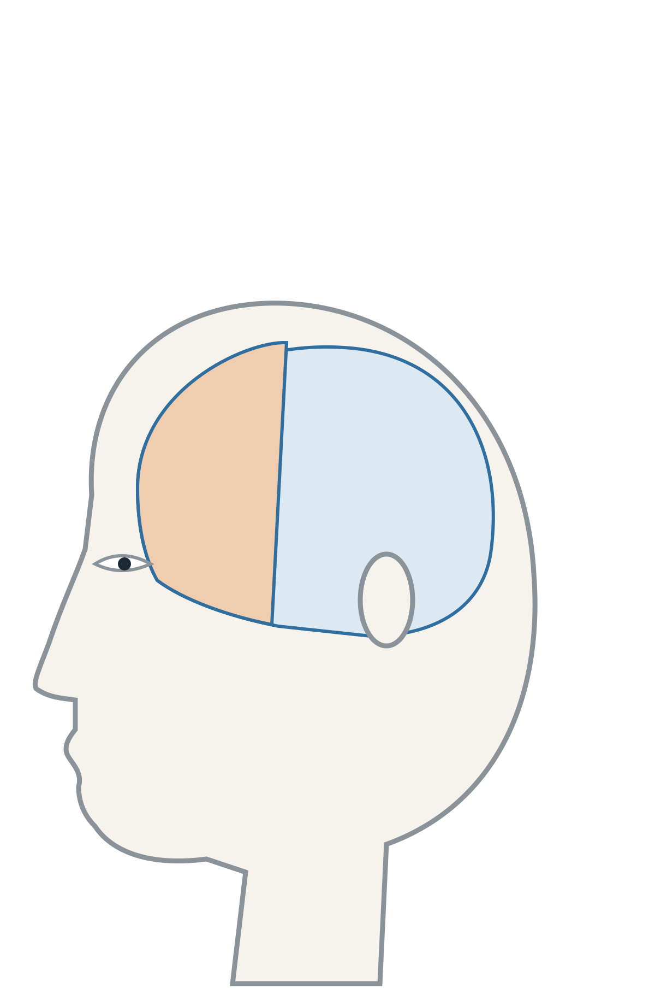
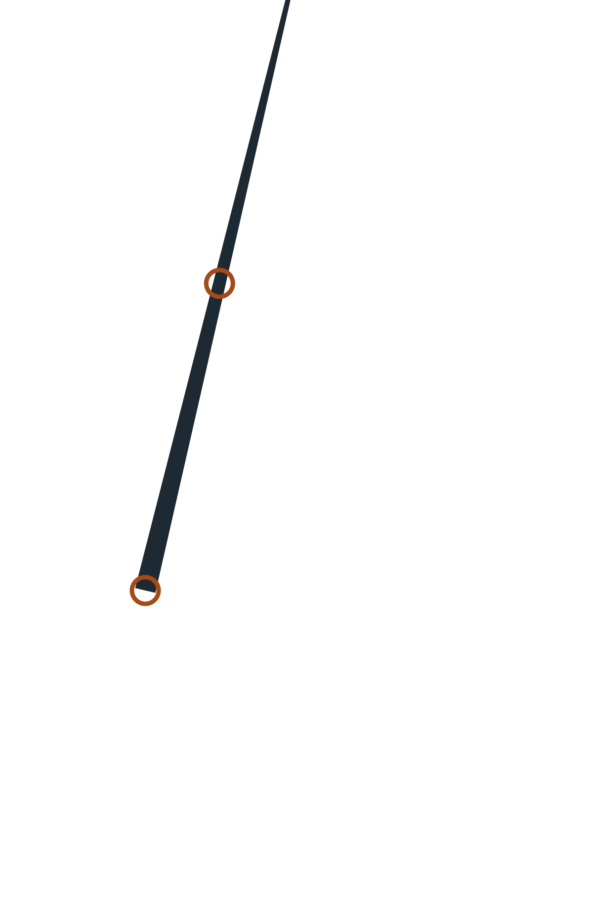
barra de ferro · 1,09 m · 6 kg13 de setembro de 1848
Phineas Gage, 25 anos, chefia uma equipa que abre caminho para uma linha de comboio. Com uma barra de ferro, calca pólvora dentro de um buraco na rocha.
A explosão
Uma faísca acende a pólvora. A barra (1,09 m, 6 kg) entra por baixo da maçã do rosto esquerda, passa por trás do olho e sai pelo topo da cabeça. Cai a cerca de 20 metros.
Sobrevive
Minutos depois está consciente e a falar. O médico John Harlow trata-o e, em poucos meses, Gage recupera fisicamente: só perde a visão do olho esquerdo.
Pode alguém sobreviver a isto… e continuar a ser a mesma pessoa?
John Harlow, relatos de 1848 e 1868; Malcolm Macmillan, «Phineas Gage: unravelling the myth», The Psychologist (2008).
Phineas Gage · o cérebro
O que foi destruído?
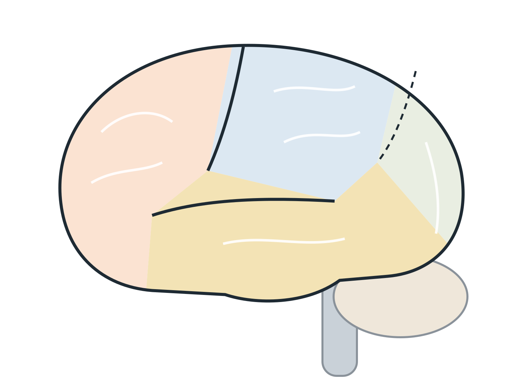
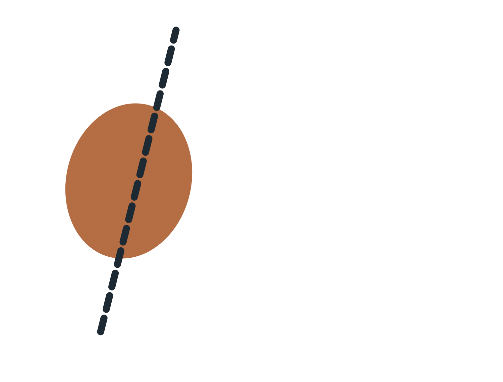
lobo frontalparietaloccipitaltemporalcerebeloA barra destruiu sobretudo o lobo frontal esquerdo, em especial o córtex pré-frontal, a parte do cérebro que nos ajuda a planear, a controlar impulsos e a comportar-nos com os outros.
Ficou
✓ memória
✓ fala e linguagem
✓ movimento
Mudou
✗ autocontrolo
✗ planeamento
✗ comportamento social
✗ personalidade
Em 2012, uma reconstrução por computador estimou que a barra destruiu cerca de 0% do córtex e 0% da substância branca: as «estradas» que ligam as regiões do cérebro.
John Van Horn e colegas, «Mapping connectivity damage in the case of Phineas Gage», PLoS ONE (2012).
Phineas Gage · depois do acidente
«Já não era o Gage»
Antes
Para os patrões, era «o capataz mais eficiente e capaz» que tinham: equilibrado, enérgico, persistente.
Depois
Impaciente, irreverente, dizia palavrões, fazia planos que logo abandonava. Harlow escreveu: «uma criança na capacidade intelectual, com as paixões animais de um homem forte».
Permaneceu a mesma pessoa?
Se o carácter muda, muda a identidade?
John Harlow (1868); Malcolm Macmillan, An Odd Kind of Fame: Stories of Phineas Gage (2000).
De Gage à lobotomia
Mudar a personalidade para tratar?
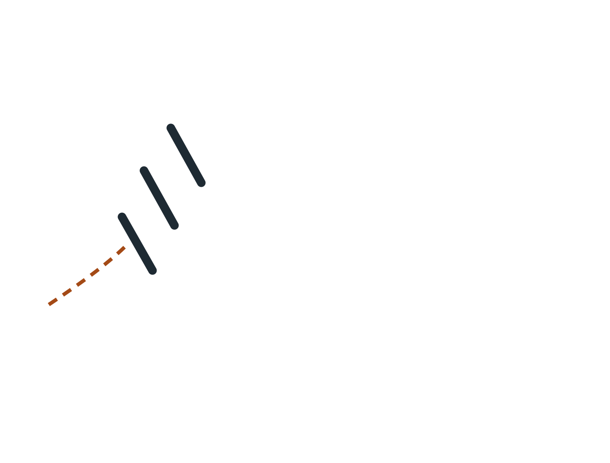
O neurologista português Egas Moniz e o neurocirurgião Almeida Lima fazem a primeira leucotomia pré-frontal: cortam ligações da substância branca do lobo frontal para tratar doenças mentais graves.
Moniz recebe o Prémio Nobel da Medicina. Nos Estados Unidos, Walter Freeman espalha a lobotomia «transorbital», feita através da órbita do olho: dezenas de milhares de pessoas são operadas.
Muitos doentes ficam calmos, mas apáticos e sem iniciativa. Com os primeiros medicamentos antipsicóticos, a operação é abandonada.
Se uma operação muda quem és, quem deveria poder decidir?
Nobelprize.org, «Egas Moniz and prefrontal leukotomy»; Prémio Nobel da Fisiologia ou Medicina de 1949.
Pesquisa · 5 minutos
O Nobel de 1949
Egas Moniz não recebeu sozinho o Prémio Nobel da Medicina de 1949. Com quem o partilhou? E porque é que cada um foi premiado?
Pesquisa no telemóvel. Podes começar pela página oficial do Prémio Nobel, ao lado.
Com o suíço Walter Rudolf Hess, pela descoberta da organização funcional do diencéfalo («cérebro intermédio») como coordenador das atividades dos órgãos internos. Egas Moniz foi premiado pela descoberta do valor terapêutico da leucotomia em certas psicoses.
Fonte: nobelprize.org, Prémio Nobel da Fisiologia ou Medicina de 1949.
A identidade na vida social
«Já não és a pessoa que assinou o contrato»
Hoje
Assinas um contrato de trabalho.
Um ano depois…
?!
Se tudo em nós muda, o que nos faz responder pelo que fizemos e prometemos?
Paul Ricoeur · filósofo francês
Duas maneiras de ser «o mesmo»
idem · mesmidade
ser o mesmo como uma coisa
Os traços que se mantêm no tempo: o corpo, o carácter, as impressões digitais. É a pergunta do navio.
podes contar comigo»
ipse · ipseidade
ser o mesmo como alguém
Manter a palavra dada, mesmo depois de ter mudado. Não depende de as peças ficarem iguais: depende de eu cumprir.
Que promessa fizeste há muito tempo e ainda cumpres?
Paul Ricoeur, O Si-Mesmo como um Outro (1990).
Exercício · Ricoeur no trabalho
A tua palavra vale quanto?
Pequenas promessas de todos os dias
«Chego às 9h.» «Entrego até sexta.» «Ligo-lhe de volta.» «Aviso se faltar.» No trabalho, prometemos o dia todo, muitas vezes sem dar por isso.
Reputação = ipse em ação
Os outros confiam em ti porque contam que amanhã sejas a mesma pessoa que prometeu hoje.
Escreve cinco promessas que fazes no trabalho, na escola ou em casa.
Ao lado de cada uma, dá-te uma nota de 1 (quase nunca cumpro) a 5 (cumpro sempre).
Escolhe a de nota mais baixa. Escreve uma coisa concreta para a cumprir melhor.
Dica de ouro: promete menos, cumpre mais. E se não der, avisa antes, não depois.
Joga · manteve a palavra?
Quem é de confiança?
O Rui não vai conseguir entregar o trabalho a tempo. Avisa a chefe na véspera e propõe uma nova data.
Sim: falhou o prazo, mas respondeu pelo que prometeu. Isto é ipse.
A Carla prometeu ligar de volta ao cliente e esqueceu-se. No dia seguinte, finge que ligou e ninguém atendeu.
Não: além de falhar, mentiu. A confiança perde-se muito mais depressa do que se ganha.
O Hugo mudou de secção, mas termina a tarefa que tinha prometido aos antigos colegas.
Sim: mudou de lugar, mas continua a ser quem prometeu.
A Sónia diz «sim» a todos os pedidos, mesmo sabendo que não vai ter tempo.
Não: prometer o que não se pode cumprir também é faltar à palavra.
Qual destas pessoas querias como colega? E como chefe?
Emmanuel Levinas · filósofo francês
O Mesmo e o Outro
A acusação
Para Levinas, a filosofia ocidental quis quase sempre reduzir o Outro ao Mesmo: compreender uma pessoa como se compreende uma coisa, arrumá-la nas minhas ideias.
Alteridade
O outro é realmente outro. Não é uma cópia de mim nem uma peça do meu mundo: há sempre nele algo que me escapa.
Já alguém te surpreendeu, depois de achares que o conhecias bem?
Emmanuel Levinas, Totalidade e Infinito (1961).
Levinas · o rosto
O rosto do outro
A primeira palavra do rosto
«Não matarás.»
O rosto está nu e exposto: é vulnerável. Antes de eu pensar ou decidir, já me pede que não lhe faça mal.
Não é a aparência
«A melhor maneira de encontrar outrem é nem sequer reparar na cor dos seus olhos!»
É um apelo
O rosto pede-me alguma coisa: atenção, cuidado, uma resposta.
Aqui nasce a ética
Antes de qualquer regra ou código de conduta, a ética começa neste encontro.
Porque é mais difícil fazer mal a alguém quando olhamos para a sua cara?
Emmanuel Levinas, Ética e Infinito (1982), capítulo «O rosto». Outrem = a outra pessoa.
Exercício · Levinas no email
Sem rosto, é mais fácil ser mal-educado
Recebeste este email de um cliente
Assunto: RELATÓRIO!!!
Já é a terceira vez que peço o relatório. Isto é inadmissível. Se não o tiver HOJE, vou falar com o vosso diretor.
Primeira vontade
«Não é a mim que tem de gritar. O atraso não foi meu.»
Por email ou por chat não vemos a cara do outro, e respondemos como não responderíamos frente a frente.
Escreve a resposta, em 5 linhas
1 · Cumprimenta pelo nome
2 · Reconhece o problema (sem culpar ninguém)
3 · Explica numa frase o que aconteceu
4 · Promete uma data concreta, que possas cumprir
5 · Despede-te com cordialidade
Ver uma resposta possível
Bom dia, Sr. Ferreira,
Tem toda a razão: o relatório devia ter-lhe chegado mais cedo, e peço desculpa pela demora. Faltavam-nos os dados de outubro, que recebemos ontem. Envio-lhe o relatório completo hoje até às 17h00.
Com os melhores cumprimentos,
Ana Lopes
Teatro · cara a cara
O cliente zangado
Grupos de três: cliente, funcionário, observador. Cada grupo tira uma situação (clica num cartão). 2 minutos para preparar, 2 minutos de cena.
O observador assinala
☐ O funcionário olhou para a cara do cliente
☐ Ouviu até ao fim sem interromper
☐ Reconheceu o problema
☐ Propôs uma solução ou um passo seguinte
Funcionários: o que é que vos acalmou o cliente? Clientes: o que é que vos irritou mais?
Dois modelos de relação
Reconhecimento ou responsabilidade?
Hegel · reconhecimento mútuo
Simetria. Eu dou e tu dás. Cada um só se torna alguém quando é reconhecido pelo outro, como já vimos.
Levinas · responsabilidade
«Sou responsável por outrem sem esperar a recíproca, ainda que isso me custe a vida.»
Conheces relações assim? Pais, cuidadores, profissões de cuidado…
Hegel, Fenomenologia do Espírito (1807) · Emmanuel Levinas, Ética e Infinito (1982), p. 105.
Voltando ao navio
As tábuas trocam-se. Tu não.
As tábuas são fungíveis
Qualquer tábua serve no lugar de outra, como qualquer nota de 20 €. É por isso que o navio levanta tantas dúvidas.
A palavra que mantenho
Ricoeur: continuo a ser eu quando cumpro o que prometi, mesmo tendo mudado de corpo, de memórias, de carácter.
O que ninguém faz por mim
Levinas: diante do outro que me pede ajuda, ninguém pode responder no meu lugar. Aí sou insubstituível.
«Sou único enquanto insubstituível, enquanto escolhido para responder por ele.»
Emmanuel Levinas
Numa frase: o que faz de ti, tu?
Emmanuel Levinas, Emmanuel Levinas, qui êtes-vous? Entrevistas com François Poirié (1987), pp. 115–116.
Para levar para a vida
Para que serve isto?
Ser de confiança
Mudas, mas cumpres o que prometeste: é a tua reputação (Ricoeur).
Responder bem por escrito
Atrás de cada email há um rosto. Cinco linhas, sem gritar, com uma data concreta.
Atender pessoas
Olhar, ouvir até ao fim, reconhecer, propor. Em qualquer balcão, loja ou telefone (Levinas).
Bilhete de saída: que promessa vais cumprir esta semana?
Jogo · 8 perguntas · 20 segundos cada
Jogo: Gage, Ricoeur e Levinas
Prontos?
8 perguntas · 20 segundos cada · respondam de braço no ar
Teclas 1 a 4 escolhem a resposta; Enter passa à seguinte.
Em que ano foi o acidente de Phineas Gage?
13 de setembro de 1848, no Vermont.
Que parte do cérebro foi sobretudo destruída?
Em especial o córtex pré-frontal.
Para Ricoeur, a identidade «ipse» é…
Ser o mesmo como alguém, não como uma coisa.
Não consegues cumprir um prazo. O que faz uma pessoa de confiança?
Responde pelo que prometeu.
Para Levinas, qual é a primeira palavra do rosto?
O rosto é vulnerável e pede-me que não lhe faça mal.
Porque é mais fácil ser mal-educado por email?
Mas a pessoa continua lá.
Um cliente zangado chega ao balcão. O que fazer primeiro?
Depois, propor uma solução ou um passo seguinte.
Em que ano recebeu Egas Moniz o Prémio Nobel?
Partilhado com Walter Rudolf Hess.
Fim do jogo!
No telemóvel · cada um no seu
Joga no telemóvel e envia as respostas
Revisão · para estudar em casa
Cinco perguntas rápidas
Depois do acidente, o que mudou em Phineas Gage?
Gage não perdeu a memória nem a fala; mudou o autocontrolo, o planeamento, o comportamento social e a personalidade.
Verdadeiro ou falso? Egas Moniz recebeu o Prémio Nobel da Medicina em 1949.
Verdadeiro: pela descoberta do valor terapêutico da leucotomia em certas psicoses.
Para Ricoeur, «manter a palavra dada, mesmo depois de ter mudado» é a identidade…
Ipse: ser o mesmo como alguém, que cumpre o que prometeu.
Para Levinas, qual é a primeira palavra do rosto?
O rosto está exposto e vulnerável: antes de eu decidir, já me pede que não lhe faça mal.
Qual dos dois modelos é uma relação de simetria, «eu dou e tu dás»?
Em Levinas, respondo pelo outro sem esperar retorno.
Duas faces da identidade
Identidade pessoal e identidade social
Identidade pessoal
o que é só meu: a minha história, o meu feitio, os meus valores, os meus gostos.
Ex.: «sou teimoso», «gosto de cozinhar», «sou crente».
Identidade social
o que vem dos grupos a que pertenço: família, profissão, terra, país, clube, religião, geração.
Ex.: «sou mãe», «sou eletricista», «sou do Porto».
Henri Tajfel e John Turner (1979): parte do que somos vem dos grupos a que pertencemos, e tendemos a favorecer o «nosso» grupo.
Tajfel, H. e Turner, J. (1979). An integrative theory of intergroup conflict.
Joga · pessoal ou social?
De que lado fica cada frase?
«Sou mãe.»
Social: vem de um grupo a que pertenço (a família).
«Sou teimoso.»
Pessoal: é o meu feitio.
«Sou eletricista.»
Social: vem da profissão.
«Gosto de cozinhar.»
Pessoal: é um gosto meu.
«Sou do Porto.»
Social: vem da terra a que pertenço.
E «sou crente»? Há frases que cabem nas duas colunas.
Os meus papéis
Ninguém é uma coisa só
Cada papel tem as suas expectativas
No trabalho espera-se uma coisa, em casa outra. Às vezes os papéis chocam: um filho doente num dia de trabalho.
A identidade de cada pessoa é feita de muitas pertenças.
Ideia central de Amin Maalouf, As Identidades Assassinas (1998)
Desenhem o vosso: quais são os vossos papéis?
A identidade constrói-se com os outros
Vemo-nos através dos olhos dos outros
Imagino como os outros me veem.
Imagino o que pensam de mim.
Isso muda o que sinto sobre mim.
Charles Horton Cooley (1902) chamou-lhe o «eu-espelho». George Herbert Mead (1934) mostrou que nos tornamos pessoas na relação com os outros.
Há algum rótulo que vos tenha marcado?
Joga · o eu-espelho num recrutamento
Como te vê quem te vai contratar?
Antes de te conhecer, o recrutador já formou uma imagem de ti. Isto ajuda ou prejudica?
O email no CV é princesinha_linda92@…
Prejudica. Cria um email só para empregos: nome.apelido@…
O email no CV é maria.silva.1985@…
Ajuda: simples e sério.
A fotografia do CV é uma selfie na praia, de óculos escuros.
Prejudica. Se puseres fotografia, rosto visível e fundo neutro.
A mensagem do teu correio de voz tem música alta e uma piada.
Prejudica: o recrutador pode ligar-te. Uma frase simples com o teu nome chega.
O teu perfil numa rede social está público, com fotografias de festas.
Prejudica, muitas vezes. Muitos recrutadores pesquisam o nome do candidato. Revê o que é público.
Respondes ao email do recrutador no próprio dia, com cumprimento e assinatura.
Ajuda: mostra interesse e cuidado.
Cooley: vemo-nos através dos olhos dos outros. No emprego, os primeiros olhos são os do recrutador.
Exercício · a tua identidade digital
O que encontra quem te pesquisa?
Pesquisa o teu nome completo num motor de busca, entre aspas. Depois, nas imagens.
Abre as tuas redes sociais sem sessão iniciada (separador privado): o que vê um desconhecido?
Escreve três coisas que um recrutador veria. Ajuda, prejudica, ou é indiferente?
Faz uma alteração já hoje: privacidade de uma rede, email novo, ou foto de perfil.
Ninguém é obrigado
Fazes no teu telemóvel e não mostras a ninguém. Se preferires, pesquisa uma figura pública e analisa a imagem que ela dá.
Que alteração fizeste?
Atividade
Vinte afirmações: «Eu sou…»
Quem sou eu?
- Eu sou
- Eu sou
- Eu sou
- Eu sou
- Eu sou
- Eu sou
- Eu sou
… até 20
Escrevam vinte respostas diferentes à pergunta «Quem sou eu?».
Comecem sempre por «Eu sou…».
Escrevam depressa, pela ordem em que vos ocorrem.
Ninguém lê a vossa folha sem autorização.
Kuhn, M. e McPartland, T. (1954). An empirical investigation of self-attitudes. American Sociological Review, 19(1).
Análise
O que dizem as vossas vinte afirmações?
Papéis e grupos
mãe, eletricista, português, benfiquista
Características pessoais
calmo, teimoso, trabalhador
Valores e crenças
honesto, crente, ecologista
Gostos e interesses
gosto de futebol, de cozinhar
- Em que categoria têm mais afirmações?
- O que escreveram primeiro? Um papel, ou uma característica?
- Quantas afirmações têm a ver com o trabalho?
- O que escreveriam de diferente há 20 anos?
A minha categoria com mais afirmações
Exercício · das vinte afirmações ao currículo
Tradutor de defeitos
Muitas coisas que dizemos de nós, com outras palavras e um exemplo, são qualidades que um patrão procura.
Na folha
Pega nas tuas vinte afirmações. Escolhe três e traduz cada uma numa qualidade profissional, com um exemplo verdadeiro. Junta as três numa frase: é o perfil do teu CV.
Regra: tem de ser verdade. Na entrevista vão pedir-te um exemplo.
Para levar para a vida
Para que serve isto?
Conhecer os teus papéis
Quando chocam (filho doente, dia de trabalho), sabes que são papéis, e negocias.
Cuidar da tua imagem
O recrutador vê-te antes de te conhecer: email, foto, redes.
Escrever o perfil do CV
Das vinte afirmações a três qualidades, cada uma com um exemplo.
Bilhete de saída: escreve o teu perfil de CV numa frase.
Jogo · 8 perguntas · 20 segundos cada
Jogo: Identidade pessoal e social
Prontos?
8 perguntas · 20 segundos cada · respondam de braço no ar
Teclas 1 a 4 escolhem a resposta; Enter passa à seguinte.
«Sou benfiquista» é sobretudo identidade…
Vem de um grupo a que pertenço: o clube.
«Sou calmo» é sobretudo identidade…
É o meu feitio.
Para Tajfel e Turner (1979), tendemos a…
Parte do que somos vem dos grupos a que pertencemos.
O que é um papel social?
Trabalhador, pai, formando… e às vezes os papéis chocam.
O «eu-espelho» de Cooley (1902) quer dizer que…
Um elogio ou um rótulo pode mudar o que sentimos sobre nós.
George Herbert Mead (1934) mostrou que…
A identidade constrói-se com os outros.
Para Amin Maalouf, a identidade de cada pessoa é feita de…
As Identidades Assassinas (1998).
«Alteridade» vem do latim «alter», que quer dizer…
É o tema da próxima sessão.
Fim do jogo!
No telemóvel · cada um no seu
Joga no telemóvel e envia as respostas
Conceitos · clica em cada palavra
Glossário
DR1 · Da identidade à alteridade · segunda parte
Como tratar o outro?
Empatia e solidariedade · Kant e Mill · igualdade e equidade · intolerância
Um caso para começar · guarda a tua resposta
O primeiro dia do Amadou
O Amadou chegou há um mês da Guiné-Bissau. Hoje é o primeiro dia dele no armazém onde trabalhas. Engana-se numa encomenda e dois colegas riem-se: «Estes não percebem nada.» Tu estás ao lado.
O que fazes?
Não há resposta certa por agora. Porque escolheste essa?
No fim deste bloco voltamos ao armazém, com três ferramentas novas: os sentimentos, as regras e as consequências.
Princípios de conduta · três passos
Sentir, querer, agir
Dos três, só um se vê de fora. Qual? E no caso do Amadou, em que passo ficaste?
Joga · no trabalho
Empatia, compaixão ou solidariedade?
«Vejo a colega nova perdida e lembro-me do meu primeiro dia.»
Empatia: ponho-me no lugar dela.
«Custa-me vê-lo assim. Gostava que aquilo acabasse.»
Compaixão: quero que deixe de sofrer, mas ainda não fiz nada.
«Fico meia hora depois do turno a ensinar-lhe o sistema.»
Solidariedade: passei à ação.
«Percebo porque é que o cliente está zangado: eu também ficava.»
Empatia: percebo o que sente.
«Juntámo-nos para cobrir os turnos da Rita enquanto o filho está no hospital.»
Solidariedade: agimos juntos.
«Dói-me ver a senhora da limpeza a ser maltratada. Aquilo tem de parar.»
Compaixão. O passo seguinte seria fazer alguma coisa.
Immanuel Kant · filósofo alemão · 1724–1804
Kant: há coisas que não se fazem
Kant, Fundamentação da Metafísica dos Costumes (1785), em formulação simplificada
Jeremy Bentham (1748–1832) e John Stuart Mill (1806–1873) · filósofos ingleses
Mill: conta quem ganha e quem perde
Bentham, Introdução aos Princípios da Moral e da Legislação (1789); Mill, Utilitarismo (1863), em formulação simplificada
Joga · quem pensa assim?
Kant ou Mill?
«Não engano o cliente, mesmo que perca a venda: enganar é errado.»
Kant: a regra conta, não o resultado.
«Mudo a escala de turnos: fica melhor para a maioria da equipa.»
Mill: o maior bem-estar para o maior número.
«Não se despede uma pessoa só para dar o exemplo aos outros.»
Kant: ninguém é só um meio.
«Fecha-se uma loja para salvar os empregos das outras dez.»
Mill: pesam-se as consequências.
«Prometi, por isso cumpro, mesmo que agora não me dê jeito.»
Kant: o dever. E se todos faltassem às promessas?
«Antes de decidir, somo quem ganha e quem perde.»
Mill: contar as consequências.
Princípios de igualdade e equidade
Tratar todos por igual é sempre justo?
No teu trabalho: um exemplo de equidade? (um horário, uma cadeira, uma formação…)
Conceitos · e joga: civil ou social?
O Estado deixa-me em paz, ou dá-me a mão?
Dizer o que penso sem ser preso por isso.
Civil: liberdade de expressão.
Ter médico e hospital, mesmo sem dinheiro.
Social: direito à saúde.
Não ser preso sem julgamento.
Civil: liberdade e segurança da pessoa.
Ter escola para os meus filhos.
Social: direito à educação.
Praticar a minha religião, ou não ter nenhuma.
Civil: liberdade de consciência e de religião.
Receber apoio se ficar desempregado.
Social: segurança social.
Diversidade, aceitação e tolerância
Tolerar chega?
Na tua equipa de trabalho: estão no primeiro, no segundo ou no terceiro degrau?
Manifestações de intolerância à diferença · um tijolo por clique
O que se mete entre mim e o outro?
Constituição da República Portuguesa, artigo 13.º
«Todos os cidadãos têm a mesma dignidade social e são iguais perante a lei.»
Qual destes tijolos já viste num local de trabalho?
Joga · no trabalho e fora dele
É discriminação?
«Não alugo a casa a estrangeiros.»
Sim: xenofobia.
«Para este lugar pedimos carta de pesados.»
Não: é um requisito do próprio trabalho.
Numa entrevista: «Pensa engravidar em breve?»
Sim: discriminação de género. É uma pergunta que não tem de ser respondida.
«Ela ganha menos do que ele, com o mesmo trabalho e a mesma antiguidade.»
Sim: desigualdade de género.
«Marcámos a reunião para segunda, para não coincidir com a oração de sexta do Ibrahim.»
Não: é respeitar a diferença. É equidade.
«O armazém não tem rampa, por isso não contratamos ninguém em cadeira de rodas.»
Sim: discrimina pela deficiência. A empresa deve adaptar.
«Os colegas deixaram de falar ao Rui desde que souberam que é casado com um homem.»
Sim: homofobia.
«Com 58 anos já não vale a pena dar-lhe formação.»
Sim: idadismo.
Para levar para a vida
Para que serve isto?
Passar à ação
Sentir não chega. Pergunta: o que posso fazer agora?
Dois testes antes de agir
E se todos fizessem o mesmo? Quem ganha e quem perde?
Pedir a rampa
Equidade não é favor: é o que falta para o direito ser real.
Dar nome ao tijolo
Reconhecer a discriminação é o primeiro passo para a travar.
De volta ao armazém, com o Amadou: escolhias a mesma resposta? O que diria Kant? E Mill?
Jogo · 8 perguntas · 20 segundos cada
Jogo: Como tratar o outro
Prontos?
8 perguntas · 20 segundos cada · respondam de braço no ar
Teclas 1 a 4 escolhem a resposta; Enter passa à seguinte.
Perceber e sentir o que o outro está a sentir é…
Empatia: pôr-me no lugar do outro.
Qual destes passos se vê de fora?
Solidariedade é agir com o outro.
Para Kant, o que torna uma ação boa é…
Conta a regra, não o resultado.
«E se todos fizessem o mesmo?» é um teste de…
Se a regra não pode valer para todos, não é aceitável.
Para o utilitarismo, a ação certa é a que…
Contam as consequências para todos.
Uma rampa ao lado de uma escada é um exemplo de…
Dar a cada um o que precisa para chegar ao mesmo sítio.
O direito à saúde é um direito…
O Estado tem de o garantir.
Recusar formação a alguém por ter 58 anos é…
Discriminação pela idade.
Fim do jogo!
No telemóvel · cada um no seu
Joga no telemóvel e envia as respostas
Fecho do DR1 · apresentação oral
Agora falas tu: três minutos
Escolhe um tema
O nome, o navio de Teseu, Gage, a identidade, Kant e Mill, a equidade, um tijolo do muro…
Liga-o à tua vida
Um caso do teu trabalho ou da tua história em que esse tema apareceu.
Mostra uma atividade
Uma coisa que fizeste nas aulas e queiras destacar (por exemplo, o teu glossário).
Estrutura simples: o que é · um exemplo meu · para que me serve.
Contexto profissional · cultura organizacional
Quem manda aqui?
Organizações verticais e horizontais, e como trabalhar em cada uma
Para começar
Tens uma ideia para poupar uma hora por dia no teu trabalho. O que fazes?
Votação de braço no ar
A resposta certa?
Depende de onde trabalhas. Numa empresa, B pode valer-te um elogio. Noutra, um problema com o teu chefe. C pode ser a regra numa equipa, e uma falta de respeito noutra.
Hoje: aprender a ler a organização onde estás, para saber como agir.
Duas maneiras de organizar o trabalho
Vertical ou horizontal?
Organização vertical (hierárquica)
muitos níveis de chefia · cada pessoa responde a um chefe · as decisões vêm de cima · regras e procedimentos escritos · subir na carreira = subir um nível
Organização horizontal (plana)
poucos níveis · equipas que se organizam · decisões partilhadas · mais autonomia, e mais responsabilidade · subir na carreira = fazer projetos maiores
Na vida real, quase todas as organizações ficam algures entre as duas. E dentro da mesma empresa pode haver secções mais verticais e equipas mais horizontais.
Lembram-se de Hegel? Reconhecimento vertical (senhor e servo) e horizontal (entre iguais).
Joga · vertical ou horizontal?
De que tipo de organização se fala?
«Sei sempre a quem pedir autorização.»
Vertical: a cadeia de comando é clara. Vantagem.
«As decisões demoram: o pedido sobe três níveis e depois desce.»
Vertical: é a desvantagem mais comum.
«Ninguém me diz o que fazer: tenho de me organizar sozinho.»
Horizontal: muita autonomia. Para uns é liberdade, para outros é stress.
«Às vezes não se percebe quem é o responsável por uma tarefa.»
Horizontal: sem chefe, é preciso combinar bem quem faz o quê.
«Há um procedimento escrito para quase tudo.»
Vertical: regras iguais para todos, menos improviso.
«Qualquer pessoa pode propor um projeto e convencer colegas a entrar.»
Horizontal: as ideias não precisam de subir a escada.
Qual destas frases descreve o teu trabalho, ou o último que tiveste?
Exercício · a régua das organizações
Onde fica cada uma?
Desenha a régua na folha e coloca as nove organizações. Discute com o colega as que ficaram em sítios diferentes.
Um caso extremo
Em 2012, o manual de acolhimento da Valve, empresa de videojogos com cerca de 300 trabalhadores, dizia que não havia chefes: nem o fundador e presidente era «o teu chefe». Cada pessoa escolhia em que projeto trabalhar.
Valve, Handbook for New Employees (2012).
Exercício · organigrama
Quem responde a quem?
Organigrama
Desenho que mostra os cargos de uma organização e quem responde a quem. Exemplo: um restaurante.
Desenha o organigrama de um sítio onde trabalhas ou trabalhaste (ou desta escola).
Pinta a tua caixa. Quem está por cima de ti? Quem está ao teu lado?
Desenha uma seta para quem resolve: um pedido de férias · uma avaria · uma queixa de um cliente.
Vertical ou horizontal? Põe uma cruz na régua.
Num emprego novo, descobrir isto na primeira semana poupa muitos problemas.
Guia prático
Como agir em cada uma
Numa organização vertical
1 · Fala primeiro com o teu chefe direto: não saltes níveis.
2 · Pedidos importantes por escrito (email): fica registo.
3 · Conhece o regulamento interno e os procedimentos.
4 · Leva ideias com solução, não só o problema.
Numa organização horizontal
1 · Toma a iniciativa: ninguém te vai dizer tudo.
2 · Combina claramente quem faz o quê e até quando.
3 · Pede e dá feedback aos colegas, com respeito.
4 · Na dúvida, pergunta a quem sabe, não a quem manda.
Nas duas
Cumpre o que prometes (Ricoeur) · trata cada pessoa como pessoa, de cima a baixo (Hegel, Levinas) · conhece os teus direitos e deveres.
Teatro · o mesmo pedido, duas empresas
Precisas de trocar o turno de sexta
Tens um exame na sexta à noite e estás escalado para esse turno. Cada grupo representa a cena numa empresa diferente.
Grupo A · Hipermercado Pirâmide
Gerente de loja → chefe de secção → operadores. Os horários são feitos pelo chefe de secção e aprovados pelo gerente.
Personagens: o trabalhador, o chefe de secção, o gerente.
Grupo B · Cooperativa Mesa Redonda
Seis cooperantes, sem chefe. Os horários decidem-se numa reunião semanal, por acordo.
Personagens: o trabalhador e três ou quatro colegas.
A turma observa
Quem decidiu? Quanto tempo demorou? O trabalhador seguiu o guia do slide anterior? Quem teve mais trabalho: o trabalhador ou a organização?
Dilema · deontologia
E se o chefe pedir uma coisa errada?
Trabalhas num talho de um supermercado. O teu chefe pede-te para mudar as etiquetas da carne que termina o prazo hoje, com a data de daqui a três dias. «Toda a gente faz isto. Despacha.»
Votação de braço no ar
O que diz a lei
O trabalhador deve cumprir as ordens do empregador sobre o trabalho, desde que não sejam contrárias aos seus direitos ou garantias. Obedecer não é deixar de ser responsável.
Código do Trabalho, artigo 128.º, n.º 1, alínea e).
Deontologia (do grego deon, «dever»): os deveres de uma profissão. E Levinas: do outro lado da etiqueta está o rosto de quem vai comer aquela carne.
Numa empresa vertical, a quem podias recorrer? E numa horizontal?
Exercício · autoconhecimento
Onde é que eu trabalho melhor?
Escreve os números de 1 a 6 na folha. Em cada linha, escolhe A ou B: a que soa mais a ti.
Mais A: talvez estejas à vontade numa organização mais vertical. Mais B: talvez numa mais horizontal. Isto não é um teste científico: é um ponto de partida para pensar.
Como é que isto te ajuda a escolher a que empregos te candidatas?
Joga · lê os sinais no anúncio de emprego
Que empresa está por trás do anúncio?
«Reporta diretamente ao chefe de secção.»
Vertical: diz-te logo quem é o teu chefe.
«Integração numa equipa autónoma, sem chefias intermédias.»
Horizontal: poucos níveis.
«Cumprimento rigoroso dos procedimentos e normas internas.»
Vertical: regras escritas para tudo.
«Procuramos alguém com espírito de iniciativa, que não precise de supervisão.»
Horizontal: vais ter de te organizar.
«Possibilidade de progressão para encarregado e chefe de turno.»
Vertical: subir de nível.
Em casa: procura um anúncio verdadeiro (por exemplo, no portal do IEFP) e sublinha os sinais.
Para levar para a vida
Para que serve isto?
Ler a organização
Organigrama na primeira semana: quem decide o quê, a quem pedir.
Agir no sítio certo
Na vertical, chefe direto e por escrito. Na horizontal, iniciativa e combinar bem.
Saber dizer que não
Obedecer não é deixar de ser responsável. Conhece os teus deveres e direitos.
Escolher onde te candidatas
Sabes onde trabalhas melhor e lês os sinais no anúncio.
Bilhete de saída: a empresa onde trabalhas (ou trabalhaste) é mais vertical ou horizontal? Como sabes?
Jogo · 8 perguntas · 20 segundos cada
Jogo: Quem manda aqui?
Prontos?
8 perguntas · 20 segundos cada · respondam de braço no ar
Teclas 1 a 4 escolhem a resposta; Enter passa à seguinte.
Numa organização vertical, as decisões…
Descem pela cadeia de comando.
Uma organização horizontal tem…
Equipas que se organizam, com mais autonomia.
O desenho que mostra quem responde a quem chama-se…
Cargos e ligações de uma organização.
Empresa vertical: tens uma ideia. O mais adequado é…
Não saltes níveis, e leva uma solução.
Equipa horizontal: há uma tarefa urgente que ninguém fez. O que fazes?
Sem chefe, é preciso combinar quem faz o quê.
«Equipa autónoma, sem chefias intermédias» descreve uma organização…
Poucos níveis, mais autonomia.
Segundo o Código do Trabalho, o trabalhador deve cumprir as ordens…
Artigo 128.º, n.º 1, alínea e).
Deontologia quer dizer…
Do grego deon, «dever».
Fim do jogo!
No telemóvel · cada um no seu
Joga no telemóvel e envia as respostas
Conceitos · clica em cada palavra
Glossário
Acrescenta ao teu glossário pessoal as palavras que ainda não tinhas.